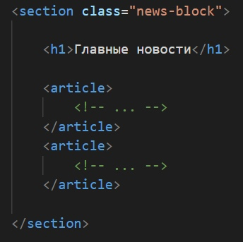

Структурирование контента в HTML: как не перепутать <div>, < section>, <article> и <aside>?
Ещё одна причина любить и уважать HTML5 — его громадный вклад в семантику кода. То есть, код теперь имеет осмысленную и логичную структуру. Для этого введены специальные теги, которые служат удобным инструментом создания понятной и легко читаемой структуры в коде.
Среди прочих стоит выделить теги <section>, <article> и <aside>. Именно они делают блок с контентом более значимым и обособленным, чем привычный <div>. Часто не до конца ясно, когда использовать эти новые элементы, а когда обычный <div>. Что ж, давайте начнём с обзора упомянутых элементов, а затем уже поговорим об их применении и комбинировании.
Обзор элементов
<div>
Элемент <div> является, пожалуй, самым универсальным блочным элементом. При этом у него нет полноценного самостоятельного значения — он предназначен для группировки контента, который семантически никак не связан между собой. Использовать <div> нужно осторожно — он не имеет смысла для скрин ридеров.
Настоятельно рекомендуем обращаться к элементу <div> только в крайнем случае, когда больше никакие другие элементы не подходят!

<section>
В отличие от <div>, тег <section> применяется к общим разделам контента, который может быть сгруппирован семантически.
Главное правило: элемент <section> уместно использовать только тогда, когда его содержимое явно указывается в структуре. Например, в качестве раздела.
В силу того, что содержимое тега <section> имеет семантическую общность — «тему» — её необходимо указать с помощью заголовка. Часто «тема» указывается сразу после открытия тега:
<article>
Тег <article> ещё более уточняющий и конкретный, чем тег <section>. Он так же применяется к семантически связанному блоку контента и должен иметь заголовок. Его содержимое должно быть независимым и самодостаточным — это, своего рода, отдельная статья. При изолировании содержимого тега <article> от остальной части страницы должны сохраняться его смысл и законченность.
<aside>
Тег <aside> тоже применяется к блоку для семантического указания раздела. Но у него есть важное отличие от <section> или <article>: он представляет блок контента, отношение которого к содержимому документа косвенное или вообще отсутствует. Тег <aside> независим (буквально, в стороне) от остального контента. То есть, он может быть вырван из одной страницы и вставлен в другую и при этом не потеряет свою актуальность.

Применение <div>, <section>, <article> и <aside>
Принимая во внимание особенности элементов, которые мы рассмотрели выше, получаем простой алгоритм для определения нужного тега в каждой ситуации:
- если контент не является семантически связанным — используется <div>.
- если контент семантически связан и относительно независим от остального содержимого страницы — используется <article>.
- если контент связан с содержимым всей страницы — используется <section>.
- тег <aside>, как было замечено выше, используется для обособления контента, который связан по смыслу между собой, но при этом не связан (слабо связан) с остальным содержимым страницы.
Комбинирование элементов
Теперь рассмотрим ключевые особенности объединения этих элементов вместе.
<article> в <article>
Элементы <article> можно вкладывать друг в друга. При этом они по-прежнему остаются самодостаточными. Предполагается, однако, что содержимое внутреннего <article> связано с содержимым внешнего.

<article> в <section>
Подобным образом несколько тегов <article> можно «обернуть» в <section>.

<section> в <article>
Возможен и обратный вариант, когда каждый тег <article> может иметь один или даже несколько тегов <section>.

Вот и всё! Надеемся, эта статья поможет вам безошибочно определять правильное место для каждого структурирующего тега в HTML5.